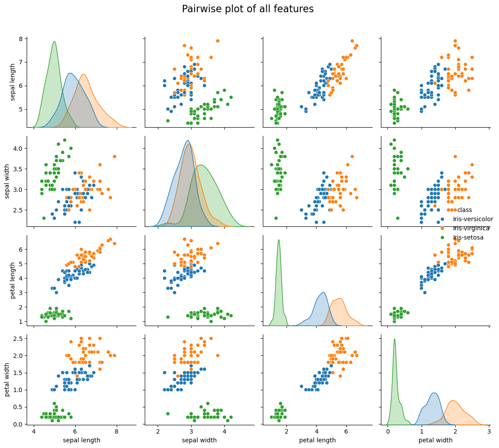
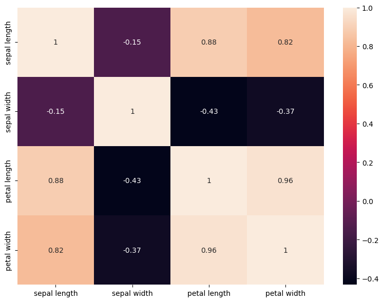
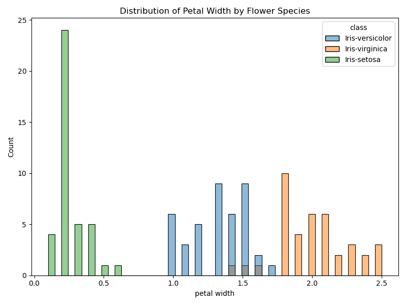

| accuracy | precision_weighted | recall_weighted | f1_weighted | |
|---|---|---|---|---|
| 0 | 0.866667 | 0.866667 | 0.866667 | 0.866667 |
Flower Species Classification Based on Iris Dataset
GitHub URL: https://github.com/hoomanesteki/iris-ml-predictor
Summary
The present endeavor constructs a model that classifies iris flower species through the classic Iris dataset Fisher (1936). It was a four-dimensional feature set, which consisted of sepal length, sepal width, petal length, and petal width that was employed to get a Decision Tree Classifier. The model’s performance was determined using a separate test set, and accuracy levels of 86.67% were observed, which is quite a strong one.
The Iris dataset is often utilized for teaching machine learning because of its uncomplicated nature and distinct class structure. Nevertheless, the limitations of the small dataset containing 150 samples and the overlap of features between versicolor and virginica make it harder to generalize. Our model, regardless of these restrictions, still manages to exhibit high classification performance and serve as a robust baseline for multilabel prediction tasks.
NB: Some of the code for our analysis was adapted from courses at the Masters Of Data Science program at UBC, particularly; 1. DSCI 571: Supervised Learning I; UBC Master of Data Science Program (2025b) 2. DSCI 522: Data Science Workflows; UBC Master of Data Science Program (2025a)
Introduction
The 150 samples in the Iris dataset are determined by four numerical characteristics which together give the dimensions of the iris flowers. The target variable consists of three species: Iris setosa, Iris versicolor, and Iris virginica. In the main, the analysis has the aim of identifying if the machine learning model—in this case, a Decision Tree Classifier—can make correct predictions of species identity relying only on these measurements.
The machine learning process outlined in this report is an entire cycle consisting of data exploration, cleaning, and transformation, modeling and finally, evaluation. Access to the full code and scripts that were used for the analysis is provided through the GitHub repository: https://github.com/hoomanesteki/iris-ml-predictor.
Methods
Data Source and Preprocessing
The collection of data was obtained from the UCI Machine Learning Repository Fisher (1936). There are no missing values in the dataset, and 50 samples represent each of the three classes. The class labels were converted into numbers (0 = setosa, 1 = versicolor, 2 = virginica). A train-test split Pedregosa et al. (2011), was done to maintain the separation of training and testing data. This will help evaluate the model’s performance on previously unseen data.
Exploratory Data Analysis
Seaborn Waskom (2021) was used to create exploratory visualizations to know the distributions and separability of features:
- Pairplot to see class clustering Figure 1
- Correlation heatmap to find correlations among quantitative features Figure 2
- Distribution plot indicating differences in petal length among species Figure 3



The above-mentioned visualizations indicate that setosa is completely isolated from the remaining two species whereas versicolor and virginica have slightly overlapping areas.
Model Building
A DummyClassifier (actually a classifier with no intelligence at all) was employed as a reference point for the performance comparison (nearly 33% correct predictions for the three equally balanced classes). Subsequently, a Decision Tree Classifier was fitted to capture the nonlinear patterns through the four input features.
Results & Discussion
The Decision Tree classifier produced a test accuracy of 86.67%, which is a considerable improvement over the baseline dummy model. This is a strong indication that the model was able to recognize and utilize the underlying patterns in the data.

The confusion matrix (Figure 4) highlights:
- The classification of setosa is perfect.
- There are some misclassifications between versicolor and virginica, which is in line with the feature distributions that overlap.
Interpretation
Setosa is distinguished without doubt by its distinct petal features. The mentioned mix up between versicolor and virginica indicates:
- Feature intersection hampers the linear or rule based separation
- A more complex or regularized decision tree might be beneficial
- More sophisticated models (such as Random Forest, SVM) might have better performance
Future Work
In order to elevate the model’s power and generalization:
- Tune the hyperparameters (maximum depth, minimum samples split)
- Try out other classifiers and evaluate them
- Apply k-fold cross-validation to obtain a stability of results
- Look into the importance of features and concentrates on misclassified samples
- Consider the use of ensemble models as a means of improving robustness
References
Fisher, R. A. 1936. “Iris.” UCI Machine Learning Repository.
Pedregosa, F., G. Varoquaux, A. Gramfort, V. Michel, B. Thirion, O. Grisel, M. Blondel, et al. 2011. “Scikit-Learn: Machine Learning in Python.” Journal of Machine Learning Research 12: 2825–30.
UBC Master of Data Science Program. 2025a. “DSCI 522: Data Science Workflows — Milestone Instructions.” https://pages.github.ubc.ca/mds-2024-25/DSCI_522_dsci-workflows_students/.
———. 2025b. “DSCI 571: Supervised Learning i — Course Materials.” https://pages.github.ubc.ca/mds-2025-26/DSCI_571_sup-learn-1_students/learning_objectives.html.
Waskom, Michael L. 2021. “Seaborn: Statistical Data Visualization.” Journal of Open Source Software 6 (60): 3021. https://doi.org/10.21105/joss.03021.